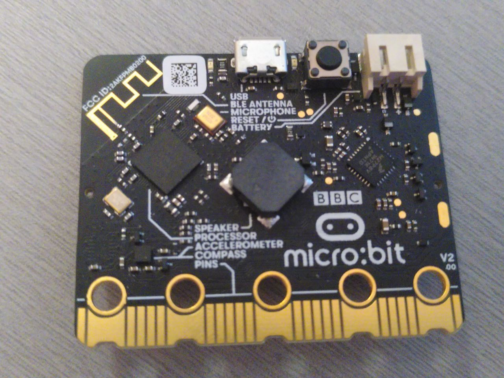
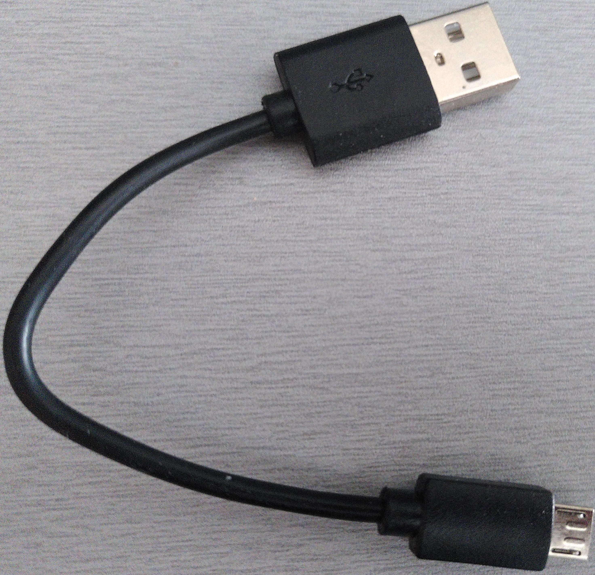

硬件 / 知识要求
阅读本书的主要知识要求是了解一些Rust。我们很难量化一些，但至少我可以告诉你，你不需要完全理解泛型，但你需要知道如何使用闭包。
您还需要熟悉2018 版的语法，extern crate尤其是在2018版中不需要的事实。
此外，要遵循本材料，您需要以下硬件：
- 一个micro:bit v2板，或者一个micro:bit v1.5板，本书将v1.5称为v1。

注意 这是micro:bit v2的图像，v1的正面看起来略有不同
- 一根micro-B USB电缆，需要使micro:bit板工作。确保数据线支持数据传输，因为某些数据线仅支持充电设备。

注意 您可能已经拥有这样的电缆，因为某些micro:bit套件随附此类电缆。 一些用于为移动设备充电的USB电缆也可以工作， 如果它们是micro-B并且具有传输数据的能力。
常见问题解答：等等，为什么我需要这个特定的硬件？
它让我和你的生活更轻松。
如果我们不必担心硬件差异，那么材料就更容易接近了。相信我这个。
常见问题解答：我可以使用不同的开发板遵循此材料吗？
也许？这主要取决于两件事：您以前使用微控制器的经验和/或是否已经存在高级板条箱，例如nrf52-hal，您的开发板的某个地方。
如果您打算使用其他微控制器，可以查看Awesome Embedded Rust HAL list。
使用不同的开发板，本文将失去大部分（如果不是全部）初学者友好性和"易于理解"，IMO。
如果您有不同的开发板并且您不认为自己完全是初学者，那么您最好从快速入门项目模板开始。